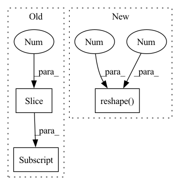

Pattern ID :20367
Before Change
R_ = param[:12].reshape(3, -1)
R = R_[:, :3]
offset = R_[:, -1].reshape(3, 1)
alpha_shp = param[12:52] .reshape(-1, 1)
alpha_exp = param[52:].reshape(-1, 1)
return R, offset, alpha_shp, alpha_expAfter Change
R = R_[:, :3]
offset = R_[:, -1].reshape(3, 1)
alpha_shp = param[trans_dim:trans_dim + shape_dim].reshape(-1, 1)
alpha_exp = param[trans_dim + shape_dim:].reshape(-1 , 1 )
return R, offset, alpha_shp, alpha_exp
In pattern: SUPERPATTERN
Frequency: 6
Non-data size: 3
Instances Fragment ID: 66033007
Project Name: cleardusk/3ddfa_v2
Commit Name: 82c3b1c119f0eedd2d56885867105ec902c5744d
Time: 2020-10-04
Author: guojianzhu1994@foxmail.com
File Name: utils/tddfa_util.py
M Class Name: AnonimousClass
N Class Name: AnonimousClass
M Method Name: _parse_param(1)
N Method Name: _parse_param(1)
M Parent Class:
N Parent Class:
M File Name: utils/tddfa_util.py
N File Name: utils/tddfa_util.py
M Start Line: 90
M End Line: 94
N Start Line: 86
N End Line: 100
Before Change
def preprocess(image: Image.Image):
image = np.asarray(image.resize((224, 224)))[..., :3]
image = np.expand_dims(image, 0)
image = image / 224
return imageAfter Change
def preprocess(img):
IMG_SIZE = 224
new_array = cv2.resize(img, (IMG_SIZE, IMG_SIZE)) // resize image to match model"s expected sizing
new_data = new_array.reshape(-1 , IMG_SIZE, IMG_SIZE, 3 ) / 255
return new_data Fragment ID: 66033023
Project Name: xai-demonstrator/xai-demonstrator
Commit Name: 50be5054ebc6d55fda9cd73e0f79321b222adda2
Time: 2021-12-27
Author: dennis.winter96@yahoo.de
File Name: guess-the-country/country-backend/country/model/predict.py
M Class Name: AnonimousClass
N Class Name: AnonimousClass
M Method Name: preprocess(1)
N Method Name: preprocess(1)
M Parent Class:
N Parent Class:
M File Name: guess-the-country/country-backend/country/model/predict.py
N File Name: guess-the-country/country-backend/country/model/predict.py
M Start Line: 22
M End Line: 27
N Start Line: 25
N End Line: 29
Before Change
// Rotate them around image center, shape (N+1, 4, 2)
stacked_rel_points = rotate_abs_points(stacked_rel_points.reshape((-1, 2))).reshape((-1, 4, 2))
rot_points = rotate_abs_points(stacked_rel_points, angle)
img_rot_corners, box_rot_corners = rot_points[:1] , rot_points[1:]
// Expand the image to fit all the original info
if expand:After Change
)
// Rotate them around image center, shape (N+1, 4, 2)
rot_points = rotate_abs_points(stacked_rel_points.reshape((-1, 2)), angle).reshape( -1, 4 , 2 )
img_rot_corners, box_rot_corners = rot_points[0], rot_points[1:]
// Expand the image to fit all the original info
if expand: Fragment ID: 66032975
Project Name: mindee/doctr
Commit Name: 1770b2ed19cb6aab1a3c435a60497b7ba214a946
Time: 2021-12-29
Author: charles@mindee.co
File Name: doctr/utils/geometry.py
M Class Name: AnonimousClass
N Class Name: AnonimousClass
M Method Name: rotate_abs_boxes(4)
N Method Name: rotate_abs_boxes(4)
M Parent Class:
N Parent Class:
M File Name: doctr/utils/geometry.py
N File Name: doctr/utils/geometry.py
M Start Line: 102
M End Line: 129
N Start Line: 103
N End Line: 131
Before Change
query_dec_attn_weights = query_dec_attn_weights.flatten()
mask = torch.ones_like(query_dec_attn_weights).to(dtype=torch.bool)
mask[::30] = False
query_dec_attn_weights[mask] = -1
query_dec_attn_weights = query_dec_attn_weights.view(original_shape)
After Change
d, h, w = backbone_features.shape[-3:]
// Reshape to get class specific queries
dec_attn_weights = dec_attn_weights.reshape(20 , 27 , -1)
// Decoder cross attn weights, averaged over all heads
for class_ in range(dec_attn_weights.shape[0]):
for query_id in range(dec_attn_weights.shape[1]): Fragment ID: 66033015
Project Name: bwittmann/transoar
Commit Name: 3c392f65b1c47115720867fb134874871f2f0360
Time: 2022-02-16
Author: bastian.wittmann@tum.de
File Name: transoar/utils/visualization.py
M Class Name: AnonimousClass
N Class Name: AnonimousClass
M Method Name: save_attn_visualization(5)
N Method Name: save_attn_visualization(6)
M Parent Class:
N Parent Class:
M File Name: transoar/utils/visualization.py
N File Name: transoar/utils/visualization.py
M Start Line: 216
M End Line: 280
N Start Line: 220
N End Line: 284
Before Change
def lm_loss(pred_lms, gt_lms, img_size=224):
w = torch.ones((1, 68)).to(pred_lms.device)
w[:, 28:31] = 10
w[:, 48:68] = 10
norm_w = w / w.sum()
loss = torch.sum(torch.square(pred_lms/img_size - gt_lms/img_size), dim=2) * norm_w
loss = torch.mean(loss.sum(1))After Change
def lm_loss(pred_lms, gt_lms, weight, img_size=224):
loss = torch.sum(torch.square(pred_lms/img_size - gt_lms /
img_size), dim=2) * weight.reshape(1 , -1 )
loss = torch.mean(loss.sum(1))
return loss
Fragment ID: 66032997
Project Name: ascust/3dmm-fitting-pytorch
Commit Name: 47a9f47b18f98042c459549c83e230b19b7b9988
Time: 2021-07-15
Author: shentong7@jd.com
File Name: core/losses.py
M Class Name: AnonimousClass
N Class Name: AnonimousClass
M Method Name: lm_loss(4)
N Method Name: lm_loss(3)
M Parent Class:
N Parent Class:
M File Name: core/losses.py
N File Name: core/losses.py
M Start Line: 15
M End Line: 19
N Start Line: 16
N End Line: 18
Before Change
audio = signal.resample_poly(audio, fs, fs_read)
tmp = octave.activlev(audio.tolist(), fs, "n")
audio, _ = tmp[:-1] .squeeze(), tmp[-1]
peak = np.max(np.abs(audio))
audio = audio / peakAfter Change
torchaudio.save(
os.path.join(output_folder, relative_path),
audio.reshape(1 , -1 ) ,
fs,
)
Fragment ID: 66032981
Project Name: speechbrain/speechbrain
Commit Name: 00ce1591cb10ef373147bcb40387ae855b6db593
Time: 2021-05-10
Author: csubakan@gmail.com
File Name: recipes/WSJ0Mix/meta/preprocess_dynamic_mixing.py
M Class Name: AnonimousClass
N Class Name: AnonimousClass
M Method Name: resample_folder(4)
N Method Name: resample_folder(4)
M Parent Class:
N Parent Class:
M File Name: recipes/WSJ0Mix/meta/preprocess_dynamic_mixing.py
N File Name: recipes/WSJ0Mix/meta/preprocess_dynamic_mixing.py
M Start Line: 50
M End Line: 84
N Start Line: 66
N End Line: 86